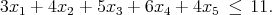
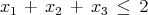
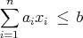
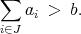
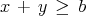
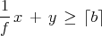
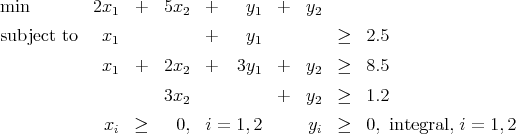

- The binary variables x1, x2, x3, x4, and x5 must satisfy the knapsack constraint
 (1) Show that the valid cover inequality
 has Chvatal rank equal to one. (Note: You will need to use the valid inequalities xi ≤ 1 in your derivation.)
- The binary variables xi, i = 1,…,n must satisfy the knapsack constraint
 (2) where b and ai, i = 1,…,n are positive scalars. Assume b > ai for i = 1,…,n. Assume further that there exists a subset J ⊆{1,…,n} with
 (3) - Give a valid cover inequality constraint.
- Show that your cover inequality has Chvatal rank equal to one.
The Node Packing and Max Clique feasibility problems can be described as follows:
Node Packing: Given a graph G = (V,E) and a integer k, does there exist
a subset U ⊆ V with ∣ U∣ ≥ k where no two of the vertices in U share an
edge?
Max Clique: Given a graph G = (V,E) and an integer p, does there exist
a clique W ⊆ V with with ∣ W∣ ≥ p?
Using the fact that Node Packing is NP-Complete, show that the Max Clique problem is NP-complete.
- Assume the nonnegative scalar integer variable y and the nonnegative scalar continuous
variable x satisfy the inequality
 (4) where b is a non-integral scalar parameter. Let f be the fractional part of b, so b = ⌊b⌋ + f and 0 < f < 1. Prove that the inequality
 (5) is valid.
- The optimal solution of the LP relaxation of the mixed integer program
 is x1 = x2 = 0, y1 = 2.5, y2 = 1.2.
- Give three valid inequalities of the type in part 3a that are violated by the solution to the LP relaxation.
- Show that none of your inequalities is implied by the other two.
Show that the shortest Hamiltonian cycle in the following graph has length 50. Make sure to prove your solution is optimal.